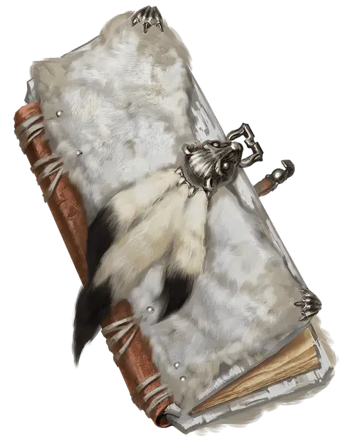

Белоснежный кодицилл
The Codicil of White
Чудесный предмет

Белоснежный кодицил - это длинный, тонкий том, переплетенный в белый горностаевый мех поверх выдержанных досок из белой сосны и запечатанный застежкой и замком из потускневшего серебра. Книга холодна на ощупь, а мех потерт по краям от использования. Двадцать семь страниц внутри из пергамента, расписанного серебряной позолотой по внешним краям. Все они пришиты к кожаному переплету полосками сухожилий, что делает книгу довольно прочной.
Существо, владеющее кодициллем, получает сопротивление урону холодом.
Кодицилл был написан последователями Аурил в качестве пособия по её богослужению. Первая страница-титульный лист с символом Аурил - снежинки. Остальные страницы описывают различные жреческие ритуалы и церемонии в леденящих подробностях. Среди этих описаний есть заклинание, которое могут выучить волшебники (ледяные пальцы [frost fingers]) и стихотворение под названием «Иней ледяной девы» ). Стихотворение представляет собой заклинание, силой которого можно расколоть ледник. Стихотворение может иметь и другие возможности, на усмотрение Мастера.
Иней Ледяной Девы
Мы склонимся пред той, на ком венец,
И мир весь остальной дрожит от страха.
Как будто предрекая наш конец
Осыплет снегом головы, как прахом.
В её глазах таится яростная буря,
Неверием не смей ты ей дерзить.
Внезапно превращаясь в фурию,
Весь мир способна снегом застелить.
Она цветы, целуя, обращает в лёд;
И, лето заточив в свою гробницу,
Навеки жизни тормозя водоворот,
В ладони прячет уж последнюю зарницу.
О, Ледяная Дева! Склонитесь, стар и млад!
Не сможем вырваться из ледяных оков.
В объятиях её сокрыто множество услад,
Правь, Ледяная Дева, правь множество веков!